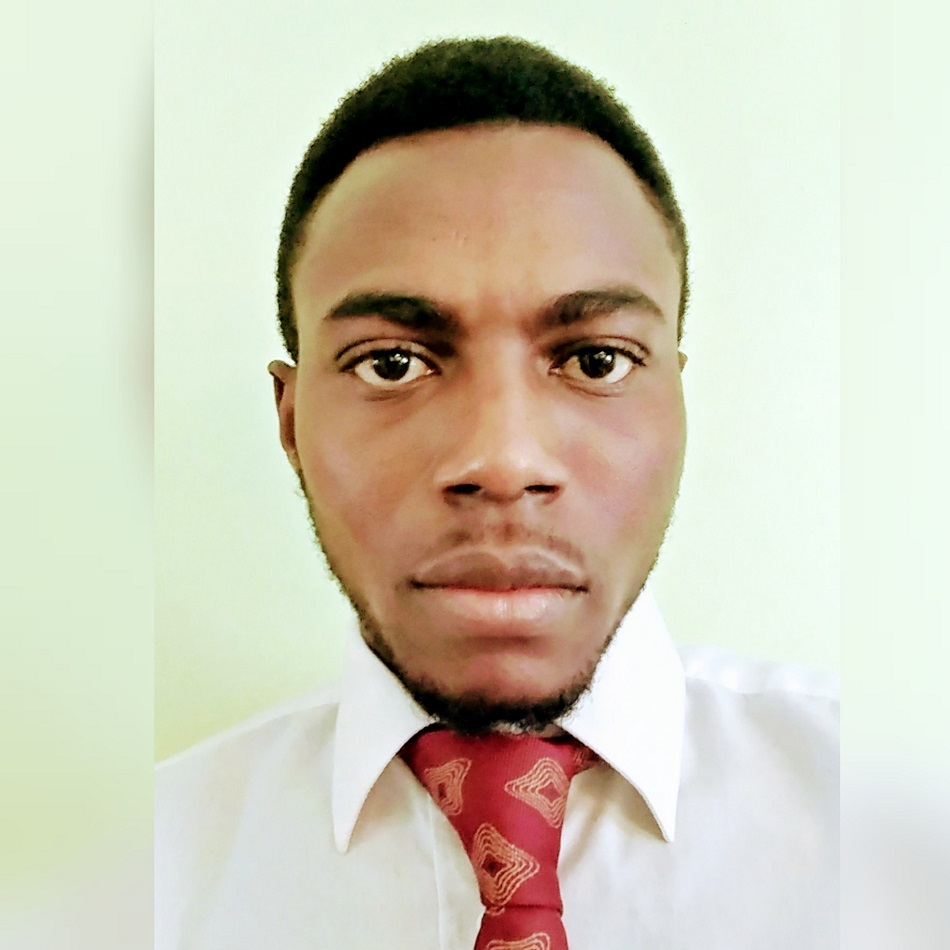

About Me

We were Christian family of 15 people (include our 2 parents, my 4 brothers, 1 sister and 7 cousins) in the village of Pagala-gare in the West Africa country of Togo. My father was a teacher and my mother runs a little restaurant. Pagala-gare was made up with several tribes so my education includes 5 native languages (Akposso, Ewe, Mina, Kotokoli, Kabye) beside our official language which is French. I spend a lot of time translating and solving problems in between those fellow villagers who found it difficult to communicate with each other. I also worked for an NGO (ONG Future Foundation Togo) putting on social and educational programs for children that did not have the advantage of a stable family grouping; being around those children still my best and emotional experience ever in my life so far due to the stories behand each of them.
As my English improved, I had a wish to move to the US. The first of my family to leave was my older brother who moved to Finland; he works and got married there since 2010. My olders sister was married to a Muslim business owner and they have 4 children together. I have participated in the U-17 Western Union and Coca-Cola tournaments representing my country(Togo) while studding marketing in our national technical high school. In 2013 I moved to Guinea to become a semi-professional soccer player, unfortunately I was injured in a game which cut my dream of soccer stardom, so I decided to enroll in the University to study sociology in 2014. After a year my name was selected by the US Diversity Visa program to move to the US and I spend the next several months being investigated by the US state department and homeland security before getting my Visa to move to the US. Then I reconnected to my US sponsor who had assisted me in my education since I was 9 years old. I took my first flight thru Istanbul and arrived at Atlanta, GA on July 10th, 2016, registering for social security and selected service, obtaining a green card securing a driver’s license, working full-time for Kroger, getting health care, staring a 401k plan and a stocking option, paying my taxies and getting accepted at Georgia Institute of Technology in Coding Boot-Camp. What a journey, and it just started!